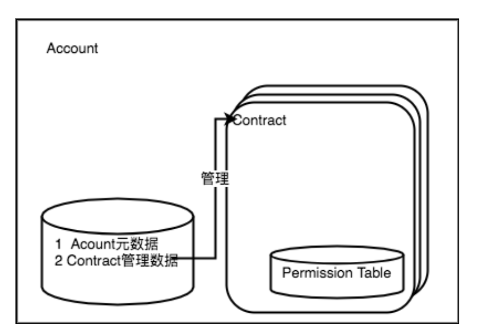

4. 账号权限控制模型¶
4.1. 背景¶
超级链需要一套去中心化的，内置的权限系统 为了实现这个目标，我们借鉴了业界很多现有系统如Ethereum、EOS、Fabric 的优点，设计一个基于账号的合约权限系统
4.2. 名词解释¶
AK(Access Key)：具体的一个address，由密码学算法生成一组公私钥对，然后将公钥用指定编码方式压缩为一个地址。账号（Account): 在超级链上部署合约需要有账号， 账号可以绑定一组AK（公钥），并且AK可以有不同的权重。 账号的名字具有唯一性。合约 (Contract): 一段部署在区块链上的可执行字节码，合约的运行会更新区块链的状态。我们允许一个账号部署多个合约。合约的名字具有唯一性。
4.3. 模型简介¶
系统会首先识别用户，然后根据被操作对象的ACL的信息来决定用户能否对其进行哪些操作

ACL简介
- 个人账号AK：是指一个具体的地址Addr
- 用户的创建是离线的行为，可以通过命令行工具或者API进行创建
- 合约账号：超级链智能合约的管理单元。
- 账号的创建：
- 任何账号或者AK都可以调用系统级智能合约创建账号
- 创建账号需要指定账号对应的拥有者的地址集，如果一个账号中只有一个地址, 那么这个Addr对账号完全控制；
- 创建账号需要指定ACL控制策略，用于账号其他管理动作的权限控制；
- 创建账号需要消耗账号资源；
- 账号名命名规则；
- 合约账号由三部分组成，分为前缀，中间部分，后缀。
- 前缀为XC，后缀为@链名
- 中间部分为16个数字组成。
- 在创建合约账号的时候，只需要传入16位数字，在使用合约账号的时候，使用完整的账号。
- 账号管理：依地址集合据创建时指定的地址集和权限策略，管理账号其他操作
- 账号股东剔除和加入
- 账号资产转账
- 创建合约，创建智能合约需要消耗账号资源，先将utxo资源打到账号下，通过消耗账号的utxo资源创建合约，验证的逻辑需要走账号的ACL控制
- 合约Method权限模型管理
- 智能合约：超级链中的一个具体的合约，属于某个账号
- 账号所属人员允许在账号内部署合约
- 账号所属人员可以定义合约管理的权限模型
- 设置合约方法的权限模型，合约内有一个权限表，记录：{ contract.method，permission_model}
- 合约命名规则：长度为4~16个字符(包括4和16)，首字母可选项为[a-ZA-Z_]，末尾字符可选项为[a-zA-Z0-9_]，中间部分的字符可选项为[a-zA-Z_.]
4.4. 实现功能¶
主要有两个功能：账号权限管理、合约权限管理
- 账号权限管理 账号的创建、添加和删除AK、设置AK权重、权限模型
- 合约权限管理 设置合约调用权限，支持2种权限模型：
- 背书阈值：在名单中的AK或Account签名且他们的权重值加起来超过一定阈值，就可以调用合约
- AK集合: 定义多组AK集合，集合内的AK需要全部签名，集合间只要有一个集合有全部签名即可
4.5. 系统设计¶

ACL架构
4.5.1. ACL数据结构说明¶
1 2 3 4 5 6 7 8 9 10 11 12 13 14 15 16 17 18 19 20 21 22 23 24 25 26 27 28 29 30 31 32 | // -------- Account and Permission Section -------
enum PermissionRule {
NULL = 0; // 无权限控制
SIGN_THRESHOLD = 1; // 签名阈值策略
SIGN_AKSET = 2; // AKSet签名策略
SIGN_RATE = 3; // 签名率策略
SIGN_SUM = 4; // 签名个数策略
CA_SERVER = 5; // CA服务器鉴权
COMMUNITY_VOTE = 6; // 社区治理
}
message PermissionModel {
PermissionRule rule = 1;
double acceptValue = 2; // 取决于用哪种rule, 可以表示签名率，签名数或权重阈值
}
// AK集的表示方法
message AkSet {
repeated string aks = 1; //一堆公钥
}
message AkSets {
map<string, AkSet> sets = 1; // 公钥or账号名集
string expression = 2; // 表达式，一期不支持表达式，默认集合内是and，集合间是or
}
// Acl实际使用的结构
message Acl {
PermissionModel pm = 1; // 采用的权限模型
map<string, double> aksWeight = 2; // 公钥or账号名 -> 权重
AkSets akSets = 3;
}
|
签名阈值策略： Sum{Weight(AK_i) , if sign_ok(AK_i)} >= acceptValue
4.5.2. 系统合约接口¶
| 合约接口 | 用途 |
|---|---|
| NewAccountMethod | 创建新的账号 |
| SetAccountACLMethod | 更新账号的ACL |
| SetMethodACLMethod | 更新合约Method的ACL |
4.5.3. 样例¶
acl模型如下：
1 2 3 4 5 6 7 8 9 10 11 | {
"pm": {
"rule": 1,
"acceptValue": 1.0
},
"aksWeight": {
"AK1": 1.0,
"AK2": 1.0
}
}
|
- 其中rule=1表示签名阈值策略，rule=2表示AKSet签名策略
- 签名的ak对应的weight值加起来>acceptValue，则符合要求